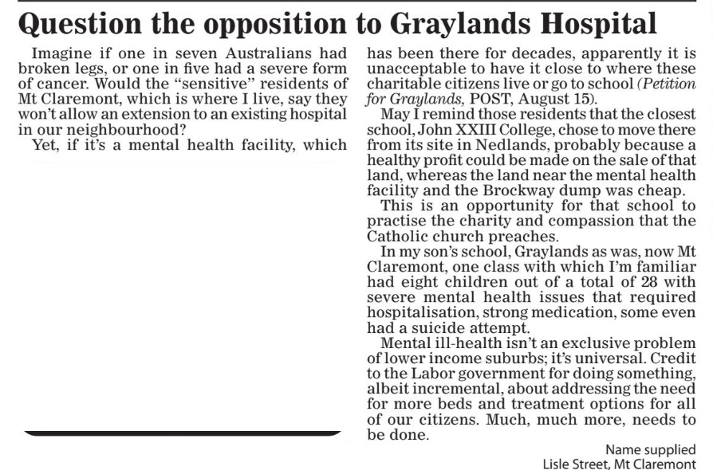

Responding to our critics, in public
When someone writes in with a different view, the fair thing is to answer here, in full — not just among ourselves.
Reply to a letter in the Post, 29 August 2026

We read this carefully, and don't think its author is wrong to care. What he's describing in his son's classroom is real, and it happens in every suburb — not just the ones people expect.
We'd only ask him to look at what's actually being built at Graylands.
A "forensic patient" means someone charged with a serious crime who a court has found unfit to stand trial, or not responsible for it because of mental illness — treated in a secure hospital instead of prison.
Graylands has held a mix of general and forensic patients since a purpose-built secure unit, the Frankland Centre, opened in 1993 — seven years after John XXIII College arrived next door. The government's own plan, assessed by its infrastructure advisor, takes this much further: zero general beds, and all 176 beds on the site becoming forensic. Only the first stage of that is funded so far. The rest hasn't been cancelled.
One more thing worth being clear about. Under the old law, someone sent to a facility like this mostly just stayed there. A law that came in during 2023 changed that — not as an option, but as a legal requirement. Patients now move in stages: supervised outings, then unsupervised ones, and for many, eventually living back in the community. That's what the law now demands, regardless of who's inside.
None of this is a case against the hospital, or against people living with mental illness — we'd like to see the Government spend far more on care, not less. It's a case for a $698 million project this size getting an honest business case (the Government's own independent advisor found the current one wasn't) and a real conversation with this community, before more funding is locked in.